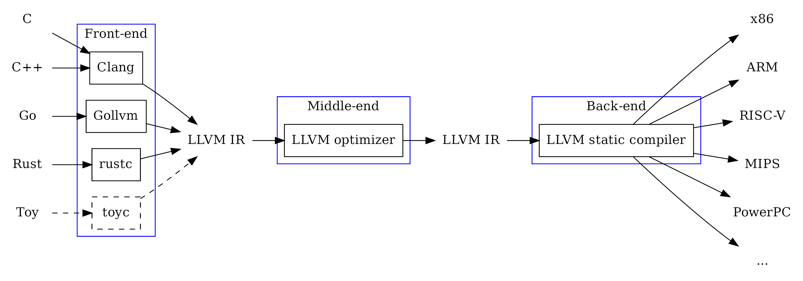

Other languages can offer advantages in performance, security, simplicity, or just cause of existing code.
2023-09-10T00:00:00+0100
Other languages can offer advantages in performance, security, simplicity, or just cause of existing code.
JavaScript doesn’t always make sense for every use case. Other languages can offer advantages in performance, security, or simplicity. Additionally, existing programs in other languages may potentially be used easily.
As already mentioned in the previous articles, a multiplication function is used as an example.
#include <stdio.h>
int multiply(int a, int b) {
return a * b;
}
int main() {
int a = 2;
int b = 21;
int result = multiply(a, b);
printf("%d * %d = %d\n", a, b, result);
return 0;
}If you are working only with programming languages that are directly interpreted, this step may not always be familiar. The C programming language must first be translated into machine code before it can be executed. There are various compilers that can handle this task. In this example, we are using the Clang LLVM Compiler, for which there are various versions available for different operating systems.
Based on Frank Denis’ input via Medium, I explain an alternative approach at the end of the article using the zig cc Compiler as a replacement for Clang. However, it cannot be used exactly the same way at the current time. However, it cannot be used exactly the same way at the current time so i still recommend using Clang.
To install it on Ubuntu, use the command
sudo apt install clang.
$ clang multiply.c
$ file a.out
a.out: ELF 64-bit LSB pie executable, x86-64, version 1 (SYSV), dynamically linked, interpreter /lib64/ld-linux-x86-64.so.2, BuildID[sha1]=882fbc40b313213c741a5fb85a55bed587acd699, for GNU/Linux 3.2.0, not stripped
$ ./a.out
2 * 21 = 42It should be noted that the compiler typically compiles for the host system. Thus, the program can only be executed on that host system.
Just as there is the WAT format in WebAssembly to make machine instructions human-readable, there is a similar language for native machine instructions as well. This is referred as Assembly Code. This code can be generated from machine code using a disassembler or, as shown here, directly from the higher-level language using LLVM.
$ clang -S multiply.c
$ cat multiply.s
.text
.file "multiply.c"
.globl multiply # -- Begin function multiply
.p2align 4, 0x90
.type multiply,@function
multiply: # @multiply
.cfi_startproc
# %bb.0:
pushq %rbp
.cfi_def_cfa_offset 16
.cfi_offset %rbp, -16
movq %rsp, %rbp
.cfi_def_cfa_register %rbp
movl %edi, -4(%rbp)
movl %esi, -8(%rbp)
movl -4(%rbp), %eax
imull -8(%rbp), %eax
popq %rbp
.cfi_def_cfa %rsp, 8
retq
.Lfunc_end0:
.size multiply, .Lfunc_end0-multiply
.cfi_endproc
# -- End function
.globl main # -- Begin function main
.p2align 4, 0x90
.type main,@function
main: # @main
.cfi_startproc
# %bb.0:
pushq %rbp
.cfi_def_cfa_offset 16
.cfi_offset %rbp, -16
movq %rsp, %rbp
.cfi_def_cfa_register %rbp
subq $16, %rsp
movl $0, -4(%rbp)
movl $2, -8(%rbp)
movl $21, -12(%rbp)
movl -8(%rbp), %edi
movl -12(%rbp), %esi
callq multiply
movl %eax, -16(%rbp)
movl -8(%rbp), %esi
movl -12(%rbp), %edx
movl -16(%rbp), %ecx
leaq .L.str(%rip), %rdi
movb $0, %al
callq printf@PLT
xorl %eax, %eax
addq $16, %rsp
popq %rbp
.cfi_def_cfa %rsp, 8
retq
.Lfunc_end1:
.size main, .Lfunc_end1-main
.cfi_endproc
# -- End function
.type .L.str,@object # @.str
.section .rodata.str1.1,"aMS",@progbits,1
.L.str:
.asciz "%d * %d = %d\n"
.size .L.str, 14
.ident "Ubuntu clang version 14.0.0-1ubuntu1.1"
.section ".note.GNU-stack","",@progbits
.addrsig
.addrsig_sym multiply
.addrsig_sym printfThe idea behind LLVM (formerly Low Level Virtual Machine) is structured similarly to WebAssembly. Various frontends for different high-level languages translate into an LLVM intermediate language. This intermediate language is then executed and analyzed or optimized on a virtual machine. Finally, it can be translated into concrete machine code by various backends.
 Image by Gopher Academy Blog
To install LLVM on Ubuntu, use the commands
sudo apt install llvm and
sudo apt install lld.
$ llc --version
Ubuntu LLVM version 14.0.0
Optimized build.
Default target: x86_64-pc-linux-gnu
Host CPU: skylake
Registered Targets:
aarch64 - AArch64 (little endian)
aarch64_32 - AArch64 (little endian ILP32)
aarch64_be - AArch64 (big endian)
amdgcn - AMD GCN GPUs
arm - ARM
arm64 - ARM64 (little endian)
arm64_32 - ARM64 (little endian ILP32)
armeb - ARM (big endian)
avr - Atmel AVR Microcontroller
bpf - BPF (host endian)
bpfeb - BPF (big endian)
bpfel - BPF (little endian)
hexagon - Hexagon
lanai - Lanai
m68k - Motorola 68000 family
mips - MIPS (32-bit big endian)
mips64 - MIPS (64-bit big endian)
mips64el - MIPS (64-bit little endian)
mipsel - MIPS (32-bit little endian)
msp430 - MSP430 [experimental]
nvptx - NVIDIA PTX 32-bit
nvptx64 - NVIDIA PTX 64-bit
ppc32 - PowerPC 32
ppc32le - PowerPC 32 LE
ppc64 - PowerPC 64
ppc64le - PowerPC 64 LE
r600 - AMD GPUs HD2XXX-HD6XXX
riscv32 - 32-bit RISC-V
riscv64 - 64-bit RISC-V
sparc - Sparc
sparcel - Sparc LE
sparcv9 - Sparc V9
systemz - SystemZ
thumb - Thumb
thumbeb - Thumb (big endian)
ve - VE
wasm32 - WebAssembly 32-bit
wasm64 - WebAssembly 64-bit
x86 - 32-bit X86: Pentium-Pro and above
x86-64 - 64-bit X86: EM64T and AMD64
xcore - XCore
$ wasm-ld --version
Ubuntu LLD 14.0.0The introductory example will now be simplified so that the multiplication function can be exported directly and used in the web application.
int multiply(int a, int b) {
return a * b;
}Compiling
clang --target=wasm32 -nostdlib -Wl,--no-entry -Wl,--export-all simple_multiply.c -o multiply.wasm.
Explanation of the options used: * --target=wasm32
specifies that it should be compiled for 32-bit WebAssembly. *
-nostdlib indicates that no C standard library should be
used. * -Wl,--no-entry indicates that there is no main
function. * -Wl,--export-all indicates that all functions
should be exported. * -o multiply.wasm specifies that the
output should be written to the multiply.wasm file.
$ file multiply.wasm
multiply.wasm: WebAssembly (wasm) binary module version 0x1 (MVP)Analyzing wasm-objdump -x multiply.wasm.
$ wasm-objdump -x multiply.wasm
multiply.wasm: file format wasm 0x1
Section Details:
Type[2]:
- type[0] () -> nil
- type[1] (i32, i32) -> i32
Function[2]:
- func[0] sig=0 <__wasm_call_ctors>
- func[1] sig=1 <multiply>
Memory[1]:
- memory[0] pages: initial=2
Global[7]:
- global[0] i32 mutable=1 <__stack_pointer> - init i32=66560
- global[1] i32 mutable=0 <__dso_handle> - init i32=1024
- global[2] i32 mutable=0 <__data_end> - init i32=1024
- global[3] i32 mutable=0 <__global_base> - init i32=1024
- global[4] i32 mutable=0 <__heap_base> - init i32=66560
- global[5] i32 mutable=0 <__memory_base> - init i32=0
- global[6] i32 mutable=0 <__table_base> - init i32=1
Export[9]:
- memory[0] -> "memory"
- func[0] <__wasm_call_ctors> -> "__wasm_call_ctors"
- func[1] <multiply> -> "multiply"
- global[1] -> "__dso_handle"
- global[2] -> "__data_end"
- global[3] -> "__global_base"
- global[4] -> "__heap_base"
- global[5] -> "__memory_base"
- global[6] -> "__table_base"
Code[2]:
- func[0] size=2 <__wasm_call_ctors>
- func[1] size=61 <multiply>
Custom:
- name: "name"
- func[0] <__wasm_call_ctors>
- func[1] <multiply>
- global[0] <__stack_pointer>
Custom:
- name: "producers"The details of the individual sections are described in the WebAssembly
Specification and are not further explained here. Note the line
func[1] <multiply> -> "multiply" in section
Export[9], which allows us to call the
multiply function in the web application.
<!DOCTYPE html>
<html lang="en">
<head>
<meta charset="utf-8" />
<title>Simple C Program in WebAssembly</title>
</head>
<body>
<form>
<input type="number" name="a" value="3" />
<input type="number" name="b" value ="14" />
<button type="submit">Multiply</button>
<output name="output">
</form>
<script>
function fetchAndInstantiate(url, importObject) {
return fetch(url)
.then(response => response.arrayBuffer())
.then(bytes => WebAssembly.instantiate(bytes, importObject))
.then(results => results.instance);
}
document.addEventListener('DOMContentLoaded', function () {
const form = document.querySelector('form');
form.addEventListener('submit', function (event) {
event.preventDefault();
const formData = new FormData(form);
const a = formData.get('a');
const b = formData.get('b');
fetchAndInstantiate('multiply.wasm')
.then(instance => {
const result = instance.exports.multiply(a, b);
form.output.value = result;
});
});
});
</script>
</body>
</html>Running the Application python3 -m http.server.
Analyzing in the Browser http://localhost:8000.
The zig cc Compiler is a drop-in replacement for Clang and GCC and does not yet have a stable release. It’s written in the Zig programming language. One advantage over Clang is that it gets shipped with source code which gets built for the host system only when needed. While Clang works on various platforms, you might not always get the latest version compiled for your operating system, and the options could potentially have different names. Perhaps for the commands in the article to work correctly, clang, llvm, or the linker (lld) may need an update.
To install it on Ubuntu, you can use
snap install zig --classic --beta (0.11.0) or, for the
latest development version,
snap install zig --classic --edge (0.12.0-dev), or compile
it yourself. Details can be found here: ziglang.org/download.
zig cc multiply.c.zig cc -S multiply.c.Unfortunately, there are still issues when compiling it for the web
applications. According to the documentation,
zig cc simple_multiply.c -target wasm32-freestanding -nostdlib -shared -rdynamic -o multiply.wasm
should work similarly to
clang simple_multiply.c --target=wasm32 -nostdlib -Wl,--no-entry -Wl,--export-all -o multiply.wasm.
However, this doesn’t work as expected, and the multiply
function isn’t exported. I believe that as Zig CC is still in
development, this will likely work in the future.
A possible solution with the ZIG CC would be to compile in two steps:
zig cc simple_multiply.c -c -target wasm32-freestanding -nostdlib -o multiply.o.
Where -c compiles into an object file without linking it.
This can then be translated into an executable WebAssembly according to
our use case using the WebAssembly Linker:
wasm-ld multiply.o --no-entry --export-all -o multiply.wasm.
To install the linker on Ubuntu
sudo apt install lld.
Or you can choose an explicit export, which will then work directly
with ZIG CC:
zig cc simple_multiply.c -target wasm32-freestanding -nostdlib -shared -Wl,--export=multiply -o multiply.wasm.
If this web application is new or if there is more interest in the
topic, I recommend consulting my older articles: * First
Experiences with WebAssembly provides an introduction and describes
the toolkit for WebAssembly. * WebAssembly
Module explains the structure of the WebAssembly module. * JavaScript
and Bytes shows how to work with bytes in JavaScript
(ArrayBuffer, DataView). * WebAssembly
Memory Describes the handling of memory in WebAssembly.
I am open to refining, expanding, or correcting the article. Feel free to provide a feedback or get in touch with me.
Created by Marco Kuoni, September 2023